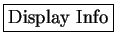
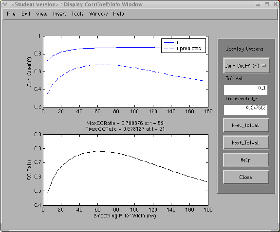
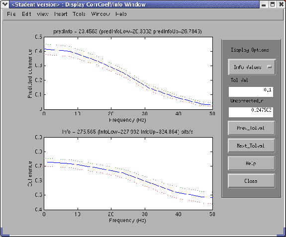
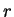
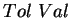

Next: Display BestStrf
Up: Validate
Previous: Validation Reference in STRFPAK
Contents
Once the
 button is clicked, the Display CorrCoef/Info window shows up. This option displays both goodness of fit measures used by STRFPAK.
The layout of the window is the same as before. The left panel shows the
graphical display and the right panel shows all the information about the
results on the left. In the right panel, there are three display options. They are:
Figure 3.19:
Predicted cc and cc for the auditory example
|
 |
Figure 3.20:
Predicted coherence and coherence for the auditory example
|
 |
- Corr Coef (r): This option is the default option. Figure 3.19
is an example of this option. In the left panel, the top figure is a
plot of the original and predicted correlation coefficient as a function of
smoothing window width. The original correlation coefficient an estimate of the correlation expected between one spike train and the PSTH given infinite data. The bottom figure
is the CC_Ratio, which is the ratio of the predicted  and the
original . The right panel shows the  of the current STRF used for prediction.
 and
and  buttons take you to the results generated from each .
buttons take you to the results generated from each .
- Info Values: Figure 3.20
is an example of this option. In the left panel, the top figure is a
plot of the predicted coherence as a function of frequency. Info values
are obtained by integrating coherence over the whole frequency range.
The bottom figure is the plot of raw coherence as a function of frequency.
The red and green lines in the plots refer to the upper and lower bounds of the estimated coherence.
The and buttons take you to the results generated from each .
- Info/r vs Tol Val: This option plots the information value as
a function of in the left top panel and the correlation
coefficient as a function of in the left bottom panel.
Next: Display BestStrf
Up: Validate
Previous: Validation Reference in STRFPAK
Contents
2004-08-09